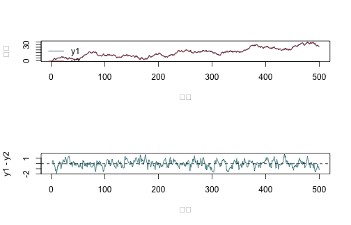
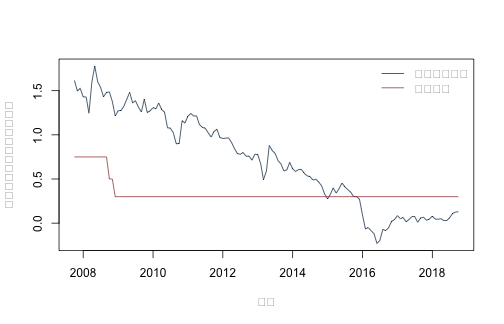
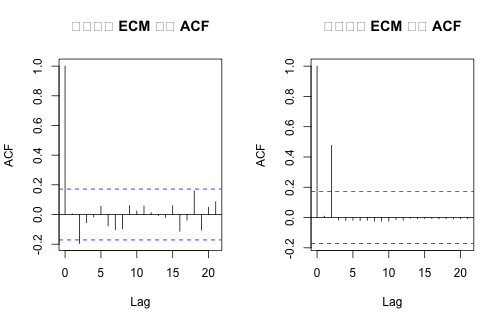

《財務時間序列分析》線上附錄
R17：共整合、Johansen 檢定與 VECM
兩條利率可能各自長時間漂移，彼此的差距卻維持在一定範圍內嗎？這正是共整合要回答的問題。本附錄先用已知共整合向量的模擬，確認利差、誤差修正與 Johansen 特徵值的計算方向；再用日本十年期殖利率與短期利率，檢查資料是否支持一條穩定的長期關係。系統表示法採用向量誤差修正模型（vector error-correction model, VECM）。
日本資料的一列是一個月份，共 133 個月，從 2007 年 10 月至 2018 年 10 月；兩條利率都沿用原檔的年百分率尺度。這是全樣本的探索性秩診斷，不是預測比較，因此不另切訓練、驗證與測試期。樣本短、又跨越金融危機與接近零利率時期，任何長期關係都必須經得起確定性項、差分落後期與制度轉折的敏感度檢查。
Johansen 秩檢定使用非標準臨界值，不能拿一般常態或卡方臨界值替代。本頁先用手動函數拆解矩陣計算，再以 urca::ca.jo() 提供和所選確定性規格相符的表列臨界值。若秩判定會隨合理的落後階數改變，結論就應停在「證據不穩定」，而不是把某一個規格寫成已證明的均衡關係。
先確認執行環境與教學函數的界線#
- 手動計算使用 R 內建函數；套件對照使用
urca；執行時不下載資料。 - 固定資料：
data/processed/japan_monthly_2007_2018.csv。 - 手動 Johansen 函數採用不受限截距的簡化規格，並依指定的差分落後期先做殘差化；它的目的在於讓矩陣步驟看得見，正式秩判定仍以套件的臨界值與明示的確定性規格為準。
knitr::opts_chunk$set(
echo = TRUE, message = FALSE, warning = FALSE,
fig.width = 7, fig.height = 4.5
)
set.seed(20260716)
root_candidates <- c(".", "..")
is_root <- vapply(root_candidates, function(x) {
file.exists(file.path(x, "main.tex"))
}, logical(1))
stopifnot(any(is_root), requireNamespace("urca", quietly = TRUE))
project_root <- root_candidates[which(is_root)[1]]
project_path <- function(...) file.path(project_root, ...)
先用已知答案的模擬建立直覺#
建立共同隨機趨勢 \(q_t=q_{t-1}+\eta_t\) 與定態利差 \(z_t=0.65z_{t-1}+e_t\)，再令 \(y_{2t}=q_t\)、\(y_{1t}=q_t+z_t\)。兩個水準都帶著同一條隨機趨勢，但相減後只剩會回到長期平均數附近的 \(z_t\)，所以真實共整合向量為 \(\beta=(1,-1)^\top\)。
Tn <- 500L
eta <- rnorm(Tn)
e <- rnorm(Tn, sd = 0.5)
q <- cumsum(eta)
z <- numeric(Tn)
for (t in 2:Tn) z[t] <- 0.65 * z[t - 1] + e[t]
Y <- cbind(y1 = q + z, y2 = q)
spread <- Y[, 1] - Y[, 2]
par(mfrow = c(2, 1))
matplot(Y, type = "l", lty = 1, col = c("#173B57", "#A34045"),
ylab = "水準", xlab = "期數")
legend("topleft", c("y1", "y2"), col = c("#173B57", "#A34045"),
lty = 1, bty = "n")
plot(spread, type = "l", col = "#1D6D73", ylab = "y1 - y2", xlab = "期數")
abline(h = mean(spread), lty = 2)

par(mfrow = c(1, 1))
用 AR(1) 型迴歸比較持續性#
下列函數回報 \(\Delta x_t=a+\rho x_{t-1}+\) 落後差分項的 OLS t 統計量。若 \(\rho\) 明顯小於零，代表偏離後有較強的拉回力量。這個函數不是完整 ADF 檢定器；臨界值會隨常數、趨勢等確定性項，以及輸入是否為估計殘差而改變。
adf_regression <- function(x, diff_lags = 0L, include_trend = FALSE,
include_intercept = TRUE) {
x <- as.numeric(x)
dx <- diff(x)
n <- length(dx)
start <- diff_lags + 1L
y <- dx[start:n]
x_lag <- x[start:n]
X <- matrix(numeric(0), nrow = length(y), ncol = 0)
if (include_intercept) X <- cbind(X, Intercept = 1)
X <- cbind(X, LevelLag = x_lag)
if (include_trend) X <- cbind(X, Trend = seq_along(y))
if (diff_lags > 0L) {
for (j in seq_len(diff_lags)) {
X <- cbind(X, dx[(start - j):(n - j)])
colnames(X)[ncol(X)] <- paste0("dLag", j)
}
}
# 這裡只估計 ADF 型迴歸與 t 統計量，不在函數內套用任何臨界值。
fit <- lm.fit(X, y)
df <- length(y) - fit$rank
sigma2 <- sum(fit$residuals^2) / df
stopifnot(fit$rank == ncol(X))
vcov <- sigma2 * solve(crossprod(X))
level_col <- match("LevelLag", colnames(X))
c(rho = fit$coefficients["LevelLag"],
t_stat = fit$coefficients["LevelLag"] / sqrt(vcov[level_col, level_col]))
}
rbind(
y1_level = adf_regression(Y[, 1], diff_lags = 1),
y2_level = adf_regression(Y[, 2], diff_lags = 1),
spread = adf_regression(spread, diff_lags = 1)
)
## rho.LevelLag t_stat.LevelLag
## y1_level -0.010508363 -1.690820
## y2_level -0.009143012 -1.614674
## spread -0.345531963 -9.004964
這裡只比較相對持續性：模擬的兩條水準序列應比利差更接近單根。ADF t 統計量不是一般常態分配，不能拿 1.96 當臨界值。
兩步 ECM：偏離長期關係後，誰負責調整？#
Engle–Granger 兩步法先估計水準之間的長期迴歸，再把前一期殘差放進差分方程。這個殘差就是誤差修正項：它若為正，表示 y1 相對 y2 高於估計的長期關係；調整係數則告訴我們下一期哪個變數往哪個方向移動。
# 第一步：y1 對 y2 的長期迴歸。
long_run <- lm(y1 ~ y2, data = as.data.frame(Y))
ec_error <- residuals(long_run)
# 第二步：兩個差分方程都含前一期估計均衡誤差。
dY <- diff(Y)
ect_lag <- ec_error[-length(ec_error)]
ecm_y1 <- lm(dY[, 1] ~ ect_lag)
ecm_y2 <- lm(dY[, 2] ~ ect_lag)
data.frame(
equation = c("Delta y1", "Delta y2"),
adjustment = c(coef(ecm_y1)["ect_lag"], coef(ecm_y2)["ect_lag"]),
standard_error = c(summary(ecm_y1)$coef["ect_lag", "Std. Error"],
summary(ecm_y2)$coef["ect_lag", "Std. Error"])
)
## equation adjustment standard_error
## 1 Delta y1 -0.28585029 0.07841242
## 2 Delta y2 0.07958777 0.07250540
coef(long_run)
## (Intercept) y2
## 0.1055747 0.9904325
因 \(y_1-y_2=z_t\)，正利差應由兩個變數的相對變動縮小。正規化方向改變時，\(\alpha\) 符號也會一起改變；因此不能脫離共整合向量的寫法，單獨比較調整係數正負號。
教學版 Johansen 特徵值：系統方法在算什麼？#
對 VECM(1)
\[ \Delta Y_t=\Pi Y_{t-1}+c+u_t, \]
本函數分別從 \(\Delta Y_t\) 與 \(Y_{t-1}\) 移除截距與指定的落後差分，再計算廣義特徵值。直覺上，它尋找哪些水準線性組合最能預測下一期差分；若只有一個組合具有拉回力量，便對應秩為 1 的情形。程式負責殘差化與矩陣運算，分析者仍須決定差分落後期、確定性項、臨界值與制度轉折。完整 Johansen 程序也必須讓這些選項彼此一致。
johansen_eigen_demo <- function(Y, diff_lags = 0L) {
Y <- as.matrix(Y)
dY <- diff(Y)
Ylag <- Y[-nrow(Y), , drop = FALSE]
stopifnot(diff_lags >= 0L, nrow(dY) > diff_lags + ncol(Y))
index <- (diff_lags + 1L):nrow(dY)
Z <- matrix(1, nrow = length(index), ncol = 1,
dimnames = list(NULL, "Intercept"))
if (diff_lags > 0L) {
for (lag in seq_len(diff_lags)) {
block <- dY[index - lag, , drop = FALSE]
colnames(block) <- paste0(colnames(Y), "_dL", lag)
Z <- cbind(Z, block)
}
}
# 不受限截距：Delta Y_t 與 Y_{t-1} 都對常數及落後差分殘差化。
residualize <- function(target, controls) {
fit <- lm.fit(controls, target)
target - controls %*% fit$coefficients
}
R0 <- residualize(dY[index, , drop = FALSE], Z)
R1 <- residualize(Ylag[index, , drop = FALSE], Z)
n <- nrow(R0)
S00 <- crossprod(R0) / n
S11 <- crossprod(R1) / n
S01 <- crossprod(R0, R1) / n
S10 <- t(S01)
# 廣義特徵值衡量水準殘差與差分殘差之間可由線性組合連結的強度。
M <- solve(S11, S10 %*% solve(S00, S01))
eig <- eigen(M)
lambda <- sort(Re(eig$values), decreasing = TRUE)
lambda <- pmin(pmax(lambda, 0), 1 - 1e-12)
K <- ncol(Y)
trace_stats <- vapply(0:(K - 1L), function(r) {
-n * sum(log(1 - lambda[(r + 1L):K]))
}, numeric(1))
max_stats <- -n * log(1 - lambda)
list(
eigenvalues = lambda,
trace = setNames(trace_stats, paste0("r<=", 0:(K - 1L))),
max_eigen = setNames(max_stats, paste0(0:(K - 1L), " vs ", 1:K)),
n = n,
diff_lags = diff_lags
)
}
j_sim <- johansen_eigen_demo(Y)
j_sim
## $eigenvalues
## [1] 0.181497909 0.005569738
##
## $trace
## r<=0 r<=1
## 102.726452 2.787068
##
## $max_eigen
## 0 vs 1 1 vs 2
## 99.939385 2.787068
##
## $n
## [1] 499
##
## $diff_lags
## [1] 0
較大的第一特徵值與較小的第二特徵值，符合模擬中只有一條定態線性組合的資料生成結構。這是程式核對，不代表看見「一大一小」便能在實證資料裡直接判秩；正式判定仍須使用與確定性規格、樣本數及落後階數相符的非標準臨界值。
用已知 VECM 參數再核對一次調整方向#
在 VECM 中，Pi = alpha %*% t(beta) 把「偏離哪條長期關係」與「各變數如何回應偏離」分開。下列小例子令前一期利差為 0.5；若 y1 下修、y2 上修，新利差就應縮小。
alpha <- matrix(c(-0.2, 0.1), ncol = 1)
beta <- matrix(c(1, -1), ncol = 1)
Pi <- alpha %*% t(beta)
eigen(Pi)$values
## [1] -0.3 0.0
Pi
## [,1] [,2]
## [1,] -0.2 0.2
## [2,] 0.1 -0.1
previous_spread <- 0.5
expected_change <- as.numeric(alpha * previous_spread)
new_spread <- previous_spread + expected_change[1] - expected_change[2]
c(dy1 = expected_change[1], dy2 = expected_change[2], new_spread = new_spread)
## dy1 dy2 new_spread
## -0.10 0.05 0.35
回到日本短長期利率：來源、樣本與尺度#
固定檔由原課程的 data_t.csv 與 yield_10.csv 依月份鍵結後整理而成。原始變數說明把 inr 定義為日本貼現率，單位是年百分率且未經季節調整；yield_10 是十年期殖利率欄位，數值沿用原檔百分比尺度。不過，資料夾沒有保留這兩欄的完整供應者與下載網址，因此本例只分析這份固定課程快照。
檔案共有 133 個連續月份（2007 年 10 月至 2018 年 10 月），兩個水準欄位均無缺值。每一列是同一月份的十年期殖利率與短期利率，後面的誤差修正係數因而描述「前月偏離與本月利率變動」的關係。樣本橫跨全球金融危機、量化寬鬆與接近零利率時期；制度轉折會使全期間共用一條線性共整合向量特別可疑。
path <- project_path("data", "processed", "japan_monthly_2007_2018.csv")
stopifnot(file.exists(path))
jp <- read.csv(path, stringsAsFactors = FALSE)
jp$date <- as.Date(jp$date)
jp <- jp[order(jp$date), ]
stopifnot(!anyDuplicated(jp$date), all(c("inr", "yield_10") %in% names(jp)))
keep <- complete.cases(jp[, c("inr", "yield_10")])
Y_jp <- as.matrix(jp[keep, c("yield_10", "inr")])
dates <- jp$date[keep]
colnames(Y_jp) <- c("Yield10", "ShortRate")
data.frame(
source_rows = nrow(jp), complete_rows = nrow(Y_jp),
start = min(dates), end = max(dates),
duplicate_dates = anyDuplicated(jp$date),
missing_yield10 = sum(is.na(jp$yield_10)),
missing_short_rate = sum(is.na(jp$inr))
)
## source_rows complete_rows start end duplicate_dates
## 1 133 133 2007-10-01 2018-10-01 0
## missing_yield10 missing_short_rate
## 1 0 0
data.frame(
variable = colnames(Y_jp),
mean = colMeans(Y_jp), sd = apply(Y_jp, 2, sd),
min = apply(Y_jp, 2, min), max = apply(Y_jp, 2, max)
)
## variable mean sd min max
## Yield10 Yield10 0.710812 0.5342095 -0.23 1.778
## ShortRate ShortRate 0.343609 0.1307631 0.30 0.750
matplot(dates, Y_jp, type = "l", lty = 1,
col = c("#173B57", "#A34045"),
xlab = "日期", ylab = "利率（原檔年百分率尺度）")
legend("topright", c("十年期殖利率", "短期利率"), col = c("#173B57", "#A34045"),
lty = 1, bty = "n")

摘要統計先提供尺度感：十年期殖利率與短期利率的樣本平均數分別約為 0.71 與 0.34。兩條線都在樣本後段接近低檔，從圖形便可看出「固定平均數、固定調整速度」並不是無須檢查的假設。
持續性與確定性規格敏感度#
先比較長期利率、短期利率與不估任何參數的單純利差 Yield10 - ShortRate。下表列出只有常數時 0、1、2、4 個差分落後期，以及「常數加趨勢、1 個差分落後期」的 ADF 型迴歸係數與 t 統計量。這些 t 值沒有一般常態分配；本附錄刻意不附沒有適當臨界值支持的 p 值。
spread_jp <- Y_jp[, "Yield10"] - Y_jp[, "ShortRate"]
series_jp <- list(
Yield10 = Y_jp[, "Yield10"],
ShortRate = Y_jp[, "ShortRate"],
RawSpread = spread_jp
)
constant_grid <- do.call(rbind, lapply(names(series_jp), function(nm) {
do.call(rbind, lapply(c(0L, 1L, 2L, 4L), function(q) {
value <- adf_regression(series_jp[[nm]], diff_lags = q)
data.frame(series = nm, deterministic = "constant", diff_lags = q,
rho = unname(value[1]), t_stat = unname(value[2]))
}))
}))
trend_grid <- do.call(rbind, lapply(names(series_jp), function(nm) {
value <- adf_regression(series_jp[[nm]], diff_lags = 1L, include_trend = TRUE)
data.frame(series = nm, deterministic = "constant+trend", diff_lags = 1L,
rho = unname(value[1]), t_stat = unname(value[2]))
}))
rbind(constant_grid, trend_grid)
## series deterministic diff_lags rho t_stat
## 1 Yield10 constant 0 -0.018389214 -1.3697718
## 2 Yield10 constant 1 -0.016170408 -1.1870966
## 3 Yield10 constant 2 -0.016197241 -1.1918573
## 4 Yield10 constant 4 -0.013998507 -1.0025149
## 5 ShortRate constant 0 -0.058855146 -3.3017387
## 6 ShortRate constant 1 -0.064742517 -3.4780026
## 7 ShortRate constant 2 -0.063188093 -3.6908101
## 8 ShortRate constant 4 -0.073065834 -4.0139428
## 9 RawSpread constant 0 -0.014737875 -0.9609526
## 10 RawSpread constant 1 -0.012908808 -0.8331237
## 11 RawSpread constant 2 -0.010382753 -0.6719815
## 12 RawSpread constant 4 -0.006963792 -0.4416911
## 13 Yield10 constant+trend 1 -0.205200938 -3.5982972
## 14 ShortRate constant+trend 1 -0.059668486 -2.7564921
## 15 RawSpread constant+trend 1 -0.137024579 -3.2028724
rbind(
dYield10 = adf_regression(diff(Y_jp[, "Yield10"]), diff_lags = 1L),
dShortRate = adf_regression(diff(Y_jp[, "ShortRate"]), diff_lags = 1L)
)
## rho.LevelLag t_stat.LevelLag
## dYield10 -1.1832626 -9.670317
## dShortRate -0.5282508 -4.761116
第一差分相對水準呈現較強的平均數回復，支持我們用差分描述短期變動，卻不等於兩個水準必然共整合。尤其短期利率在樣本後段長時間貼近零，常數、趨勢、結構轉折與差分落後期都會改變非標準檢定的有限樣本分配。
Engle–Granger 殘差與 Johansen 落後期敏感度#
先估 Yield10 = a + b ShortRate + e。共整合若成立，估計殘差應為定態；但因為 a 與 b 也是從同一份資料估得，殘差單根檢定的臨界值不同於一般 ADF。以下只回報不同落後期下的殘差 t 統計量，並把 Johansen 教學統計量在 0 至 3 個差分落後期下全部列出。
long_jp <- lm(Yield10 ~ ShortRate, data = as.data.frame(Y_jp))
ect_jp <- residuals(long_jp)
data.frame(
intercept = coef(long_jp)["(Intercept)"],
slope = coef(long_jp)["ShortRate"],
r_squared = summary(long_jp)$r.squared,
residual_sd = sd(ect_jp)
)
## intercept slope r_squared residual_sd
## (Intercept) 0.006504647 2.049735 0.2517345 0.4621038
eg_residual_grid <- do.call(rbind, lapply(0:4, function(q) {
value <- adf_regression(ect_jp, diff_lags = q, include_intercept = FALSE)
data.frame(diff_lags = q, rho = unname(value[1]), t_stat = unname(value[2]))
}))
eg_residual_grid
## diff_lags rho t_stat
## 1 0 -0.01735221 -0.9593388
## 2 1 -0.01662733 -0.9104236
## 3 2 -0.01516000 -0.8187528
## 4 3 -0.01508995 -0.8058602
## 5 4 -0.01322106 -0.6961770
johansen_grid <- do.call(rbind, lapply(0:3, function(q) {
result <- johansen_eigen_demo(Y_jp, diff_lags = q)
data.frame(
diff_lags = q, n = result$n,
lambda1 = unname(result$eigenvalues[1]),
lambda2 = unname(result$eigenvalues[2]),
trace_r0 = unname(result$trace[1]), trace_r1 = unname(result$trace[2]),
max_r0_r1 = unname(result$max_eigen[1]),
max_r1_r2 = unname(result$max_eigen[2])
)
}))
rownames(johansen_grid) <- NULL
johansen_grid
## diff_lags n lambda1 lambda2 trace_r0 trace_r1 max_r0_r1 max_r1_r2
## 1 0 132 0.07896105 0.012954906 12.57861 1.721221 10.85739 1.721221
## 2 1 131 0.08797213 0.012846012 13.75683 1.693730 12.06310 1.693730
## 3 2 130 0.09849780 0.007761539 14.49300 1.012936 13.48006 1.012936
## 4 3 129 0.11599648 0.009178353 17.09443 1.189475 15.90496 1.189475
Engle–Granger 殘差 t 統計量只介於 -0.96 與 -0.70，沒有呈現模擬共整合例那種明顯平均數回復；Johansen 的 trace_r0 則隨差分落後期從 12.58 變到 17.09。這些輸出不能被寫成「已證明日本利率共整合」。正式判定必須使用與確定性規格、差分落後期、樣本數相符的非標準臨界值，並檢查制度轉折。若秩結論會隨規格翻轉，就應保留差分 VAR 或其他不強迫長期關係的模型作為基準。
套件作法：用 urca::ca.jo() 完成 Johansen 秩檢定#
教學函數讓矩陣步驟看得見，urca::ca.jo() 則補上和規格相符的臨界值。以下固定 ecdet = "const"，表示共整合關係含常數；spec = "transitory" 把誤差修正項寫在 \(Y_{t-1}\) 上。套件參數 K 是水準 VAR 的落後階數，所以 VECM 中的落後差分階數是 \(K-1\)。我們同時列出跡檢定與最大特徵值檢定，並比較 \(K=2,3,4\)；不要把 K 誤當成差分落後階數。
extract_ca_jo <- function(Y, K, type) {
fit <- urca::ca.jo(
Y,
type = type,
ecdet = "const",
K = K,
spec = "transitory"
)
data.frame(
檢定 = if (type == "trace") "跡檢定" else "最大特徵值檢定",
水準VAR落後階數 = K,
VECM差分落後階數 = K - 1L,
虛無假設 = rownames(fit@cval),
統計量 = unname(fit@teststat),
百分之五臨界值 = unname(fit@cval[, "5pct"]),
百分之五水準是否拒絕 = unname(fit@teststat > fit@cval[, "5pct"]),
check.names = FALSE
)
}
urca_rank_table <- do.call(rbind, lapply(2:4, function(K) {
rbind(
extract_ca_jo(Y_jp, K = K, type = "trace"),
extract_ca_jo(Y_jp, K = K, type = "eigen")
)
}))
rownames(urca_rank_table) <- NULL
urca_rank_table
## 檢定 水準VAR落後階數 VECM差分落後階數 虛無假設 統計量
## 1 跡檢定 2 1 r <= 1 | 3.148794
## 2 跡檢定 2 1 r = 0 | 17.253795
## 3 最大特徵值檢定 2 1 r <= 1 | 3.148794
## 4 最大特徵值檢定 2 1 r = 0 | 14.105001
## 5 跡檢定 3 2 r <= 1 | 3.367953
## 6 跡檢定 3 2 r = 0 | 17.445248
## 7 最大特徵值檢定 3 2 r <= 1 | 3.367953
## 8 最大特徵值檢定 3 2 r = 0 | 14.077295
## 9 跡檢定 4 3 r <= 1 | 4.162468
## 10 跡檢定 4 3 r = 0 | 20.280957
## 11 最大特徵值檢定 4 3 r <= 1 | 4.162468
## 12 最大特徵值檢定 4 3 r = 0 | 16.118489
## 百分之五臨界值 百分之五水準是否拒絕
## 1 9.24 FALSE
## 2 19.96 FALSE
## 3 9.24 FALSE
## 4 15.67 FALSE
## 5 9.24 FALSE
## 6 19.96 FALSE
## 7 9.24 FALSE
## 8 15.67 FALSE
## 9 9.24 FALSE
## 10 19.96 TRUE
## 11 9.24 FALSE
## 12 15.67 TRUE
在 5% 水準下，\(K=2\) 與 \(K=3\) 的兩種檢定都沒有拒絕秩為 0；到了 \(K=4\)，兩種檢定才拒絕秩為 0，且都沒有拒絕秩至多為 1。也就是說，是否得到秩 1 會隨水準 VAR 落後階數改變。這份正式套件結果和前面的教學統計量傳達同一個警訊：目前樣本不足以支持一個不依規格而穩定的共整合秩結論。臨界值仍建立在套件所列的確定性規格與大樣本理論上，沒有處理樣本中的制度轉折。
探索性 ECM：把弱長期證據當成敏感度計算#
即使秩的證據不強，ECM 仍可回答一個假設式問題：「如果暫時採用這條長期迴歸，資料看起來會如何調整？」以下分別放入 0、1、2 個落後差分；ECT 的 OLS t 與 p 值只是給定第一階段長期迴歸後的條件式描述，沒有校正長期關係也是估出來的，更沒有校正秩的選擇。
fit_ecm_system <- function(Y, ect, diff_lags = 1L) {
Y <- as.matrix(Y)
dY <- diff(Y)
ect_lag <- ect[-length(ect)]
index <- (diff_lags + 1L):nrow(dY)
# ECT 必須落後一期，避免用本期利率變動所包含的資訊解釋自己。
X <- cbind(Intercept = 1, ECT = ect_lag[index])
if (diff_lags > 0L) {
for (lag in seq_len(diff_lags)) {
block <- dY[index - lag, , drop = FALSE]
colnames(block) <- paste0("d", colnames(Y), "_L", lag)
X <- cbind(X, block)
}
}
fits <- lapply(seq_len(ncol(Y)), function(j) {
y <- dY[index, j]
fit <- lm.fit(X, y)
df <- length(y) - fit$rank
sigma2 <- sum(fit$residuals^2) / df
V <- sigma2 * solve(crossprod(X))
se <- sqrt(diag(V))
t_value <- fit$coefficients / se
list(
coefficients = fit$coefficients, se = se, t = t_value,
p = 2 * pt(abs(t_value), df = df, lower.tail = FALSE),
residuals = fit$residuals, n = length(y), df = df
)
})
names(fits) <- colnames(Y)
fits
}
ecm_grid <- do.call(rbind, lapply(0:2, function(q) {
fits <- fit_ecm_system(Y_jp, ect_jp, diff_lags = q)
do.call(rbind, lapply(names(fits), function(eq) {
fit <- fits[[eq]]
lb <- Box.test(fit$residuals, lag = 12, type = "Ljung-Box",
fitdf = 1 + 2 * q)
data.frame(
diff_lags = q, equation = paste0("Delta ", eq), n = fit$n,
ect_adjustment = unname(fit$coefficients["ECT"]),
ect_se = unname(fit$se["ECT"]), ect_t = unname(fit$t["ECT"]),
ect_ols_p = unname(fit$p["ECT"]), residual_lb_p = lb$p.value
)
}))
}))
rownames(ecm_grid) <- NULL
ecm_grid
## diff_lags equation n ect_adjustment ect_se ect_t ect_ols_p
## 1 0 Delta Yield10 132 -0.021074124 0.015518670 -1.3579851 0.1768207
## 2 0 Delta ShortRate 132 -0.001851880 0.005269455 -0.3514368 0.7258296
## 3 1 Delta Yield10 131 -0.020395657 0.015776920 -1.2927528 0.1984435
## 4 1 Delta ShortRate 131 -0.002093077 0.005391528 -0.3882159 0.6985063
## 5 2 Delta Yield10 130 -0.015438633 0.015712816 -0.9825503 0.3277420
## 6 2 Delta ShortRate 130 0.001750973 0.004840464 0.3617366 0.7181646
## residual_lb_p
## 1 0.5366255619
## 2 0.0008679892
## 3 0.2923893891
## 4 0.0002758963
## 5 0.3704686705
## 6 0.0270738186
ecm_selected <- fit_ecm_system(Y_jp, ect_jp, diff_lags = 1L)
par(mfrow = c(1, 2))
acf(ecm_selected$Yield10$residuals, main = "長期利率 ECM 殘差 ACF")
acf(ecm_selected$ShortRate$residuals, main = "短期利率 ECM 殘差 ACF")

par(mfrow = c(1, 1))
長期利率方程的 ECT 係數在三個落後期規格下約為 -0.021 至 -0.015。負號方向雖符合「長期利率偏高後略為下修」的直覺，最小的未校正 OLS p 值仍為 0.177，證據並不強。短期利率方程的調整係數接近零且會變號，未校正 p 值皆大於 0.70；其 12 階殘差 Ljung–Box p 值最高也只有 0.027，表示短期動態仍未充分吸收。
這份利率資料告訴我們什麼？#
就本樣本而言，較適當的結論是：這 133 個月的資料對單一、全期間固定的共整合關係支持有限。Engle–Granger 殘差沒有明顯拉回，ca.jo() 的秩判定隨水準 VAR 落後階數改變，探索性 ECM 的調整係數也弱；因此 ECM 數字可以用來理解「若長期關係成立時」的調整機制，卻不能包裝成已確立、可套利的長期法則。
若要繼續研究，應比較更多可辯護的確定性規格，並清楚交代整合階數、差分落後期與共整合向量的正規化。VECM 的差分落後期比對應水準 VAR 的落後階數少一階，兩者比較時也要維持一致。
更重要的是檢查樣本是否真的能共用一條長期關係。可以分開金融危機前後、加入制度轉折或改以差分 VAR 作基準；若秩結論在這些合理規格間翻轉，就應保留不確定性。最後，共整合本身不等於無風險套利，VECM 的創新項也不會自動成為已識別的結構衝擊。
sessionInfo()
## R version 4.5.2 (2025-10-31)
## Platform: aarch64-apple-darwin20
## Running under: macOS Tahoe 26.5.1
##
## Matrix products: default
## BLAS: /System/Library/Frameworks/Accelerate.framework/Versions/A/Frameworks/vecLib.framework/Versions/A/libBLAS.dylib
## LAPACK: /Library/Frameworks/R.framework/Versions/4.5-arm64/Resources/lib/libRlapack.dylib; LAPACK version 3.12.1
##
## locale:
## [1] C.UTF-8/C.UTF-8/C.UTF-8/C/C.UTF-8/C.UTF-8
##
## time zone: Asia/Tokyo
## tzcode source: internal
##
## attached base packages:
## [1] stats graphics grDevices utils datasets methods base
##
## loaded via a namespace (and not attached):
## [1] sandwich_3.1-2 generics_0.1.4 shape_1.4.6.1
## [4] fGarch_4052.93 lattice_0.22-7 digest_0.6.39
## [7] magrittr_2.0.4 evaluate_1.0.5 grid_4.5.2
## [10] RColorBrewer_1.1-3 iterators_1.0.14 foreach_1.5.2
## [13] glmnet_4.1-10 Matrix_1.7-4 Formula_1.2-5
## [16] survival_3.8-3 plm_2.6-7 forecast_9.0.2
## [19] scales_1.4.0 gbutils_0.5.1 codetools_0.2-20
## [22] textshaping_1.0.5 Rdpack_2.6.6 cli_3.6.5
## [25] timeSeries_4052.112 rlang_1.1.7 rbibutils_2.4.1
## [28] miscTools_0.6-30 splines_4.5.2 otel_0.2.0
## [31] cvar_0.6 tools_4.5.2 parallel_4.5.2
## [34] SparseM_1.84-2 MatrixModels_0.5-4 bdsmatrix_1.3-7
## [37] dplyr_1.2.1 colorspace_2.1-3 ggplot2_4.0.3
## [40] maxLik_1.5-2.2 vctrs_0.7.2 R6_2.6.1
## [43] zoo_1.8-15 lifecycle_1.0.5 MASS_7.3-65
## [46] ragg_1.5.2 pkgconfig_2.0.3 urca_1.3-4
## [49] pillar_1.11.1 gtable_0.3.6 glue_1.8.0
## [52] Rcpp_1.1.0 collapse_2.1.7 systemfonts_1.3.2
## [55] lmtest_0.9-40 xfun_0.57 tibble_3.3.0
## [58] tidyselect_1.2.1 knitr_1.51 farver_2.1.2
## [61] spatial_7.3-18 nlme_3.1-168 fBasics_4052.98
## [64] timeDate_4052.112 fracdiff_1.5-4 compiler_4.5.2
## [67] quantreg_6.1 S7_0.2.2